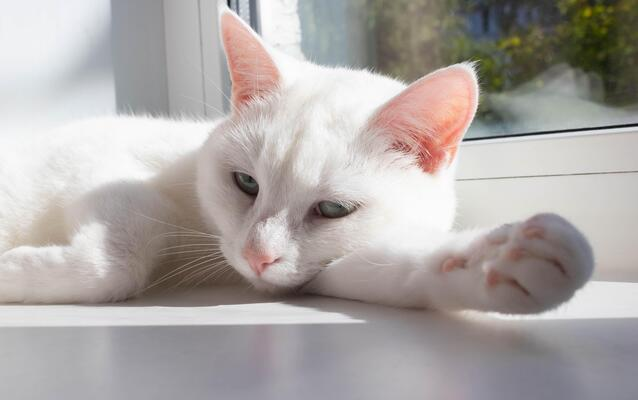
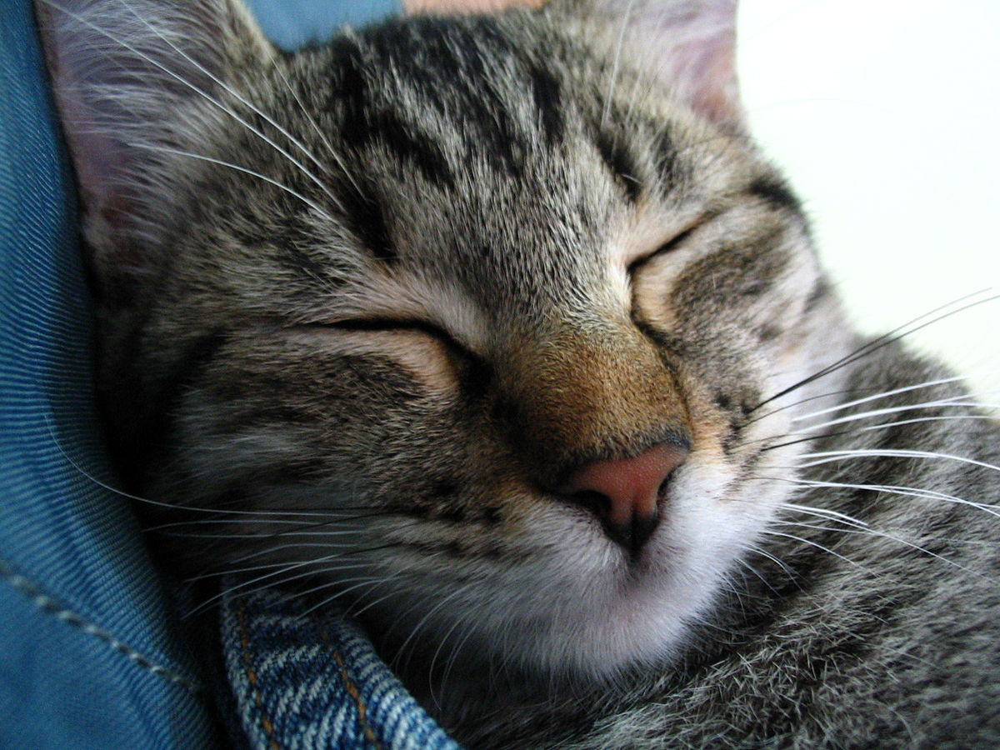
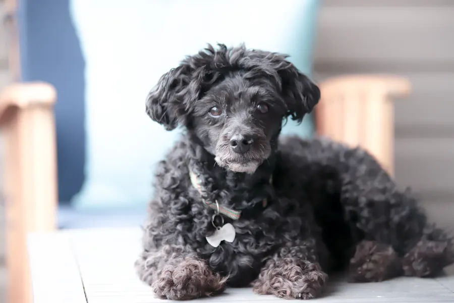

Animais Disponíveis para Adoção
Conheça nossos amigos que aguardam um lar
Escolha seu novo companheiro entre cães e gatos resgatados em Suzano.

Mingau
Um gato muito carinhoso e amigável.

Roger
Calmo, carinhoso e adora crianças.

Vandinho
carinhoso e curioso.
Caio
Brincalhão e agitado.

soneca
carinhoso e dorminhoco.

jojo
Carinhoso e sempre pronto para brincar.